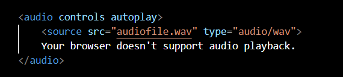

Audio files are essential components in web development, adding interactivity and enhancing the user experience. They are used for background music, voiceovers, and interactive features. Here's a simple example:
The <audio> element in the example above provides audio controls for playback. The controls attribute allows users to play, pause, and adjust volume, while autoplay starts playing the audio automatically when the page loads.
If the browser doesn't support the audio format, the message "Your browser doesn't support audio playback" is displayed. It's crucial to provide fallback content for compatibility.
Audio files contribute to a richer user experience. They engage users through sound and can provide valuable content in various forms, making websites more dynamic and interactive.
Audio files are powerful tools in web development. They add depth and engagement to web content, whether for entertainment, education, or communication. Including audio in your web projects can make them more immersive and appealing to users.
